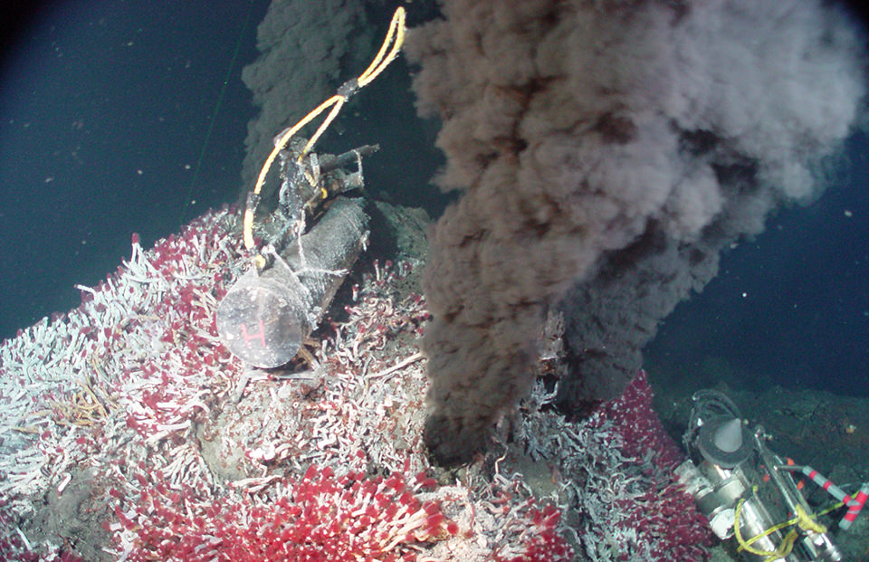

Photosynthesis is the main way the bottom of the food chain gets their energy. Usually on land or shallow waters, plankton plays this role in supporting a large part of marine life, and then primary consumers go on to eat these and so on. However, in the deep sea, there is no sunlight. Animals above excrete, die, and moult, which creates organic material that sinks down–this is referred to as marine snow. But this is not enough to support complex biological communities.
Instead of photoautotrophs (organisms that convert sunlight to energy), there are chemoautotrophs. At hydrothermal vents, hot upwellings of dissolved chemicals and minerals form structures at the bottom of the ocean.

The chemicals expelled from these vents would be toxic to us, but to life in the deep sea, it is a vital part of containing nutrients that bacteria can convert to energy in a process similar to photosynthesis. Bacteria is the main source of nutrients for the deep sea ecosystem.

Bottom-feeders, such as limpets and shrimps graze on microbial mats. Yeti crabs farm colonies of bacteria on their leg. These types of creatures are the deep ocean’s primary consumers. Predators at the vents are the secondary consumers. This includes crabs, eels, and octopuses, and most of the time they can not stray from these vents. However, chemical energy is still cycled through the entire ecosystem. For example, these areas can get visitors from creatures that can survive away from vents, but still need a place to feed or lay their eggs.
Nutrient Supply Chain
When visitors leave, they take the energy with them and move to areas of the ocean that have no producers. Visitors support pelagic ocean wanderers, the ones always moving and never settling as a part of a specific community. They get their energy through predation. This is why wanderers often are larger in size, as it makes them more efficient. They can also go a long time without food as they have slow metabolisms, having adapted to the scarcity of food

 back to menu
back to menu